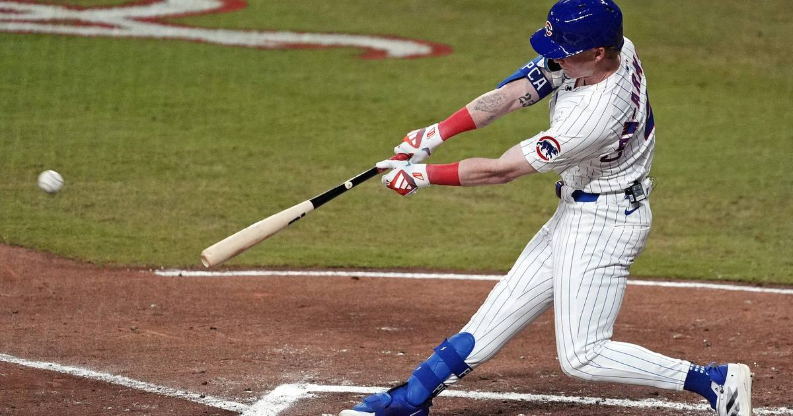

Pete Crow-Armstrong wins the 2026 NL MVP — unanimously
All 30 first-place votes — Pete Crow-Armstrong is the 2026 NL MVP after a 40/40 season, the first ever by a Cub.

Disclosure: this post contains affiliate links. I earn a commission on qualifying purchases.
Unanimous
There was no debate. Pete Crow-Armstrong is the 2026 National League MVP, and every single BBWAA voter agreed — all 30 first-place votes, announced Thursday night. Shohei Ohtani finished second. Brice Turang was third.
At 24, the Chicago Cubs center fielder put together one of the greatest single seasons in franchise history: .280/.372/.570 (175-for-626) with 31 doubles, eight triples, 45 home runs, 41 stolen bases, 107 RBIs, 119 runs and a 157 wRC+ — and he played all 162 games. Both leagues had unanimous winners this year, with Yordan Alvarez taking the AL award the same night.
The 40/40 club
Those two numbers are the story. He became the seventh player in MLB history to record 40 home runs and 40 stolen bases in the same season — and the first Cub ever to do it. The list he joined is that short for a reason: it takes a hitter with real power and a runner with real speed, in the same body, in the same year.
The best player in baseball, by WAR
The value case wasn't close. He led all players in Wins Above Replacement — 9.8 bWAR by Baseball Reference's measure. His homer total tied Kyle Schwarber for the major-league lead, and he led the majors in runs scored and WAR. There was no argument left for anyone else by September; the vote just made it official.
Ending the Ohtani run
The win snaps Ohtani's streak of three consecutive MVP wins — 2023 in the AL with the Angels, then 2024 and 2025 in the NL with the Dodgers. Barry Bonds is the only player in MLB history to win the award in four consecutive seasons, and that record stays safe.
Head to head, it wasn't a photo finish. Ohtani hit .275 with 30 homers, 81 RBIs, 11 steals and a .889 OPS — every one of those marks sat well behind PCA's. The FanGraphs WAR gap told the same story: 10.6 to 6.6.
The turnaround
This was not a wire-to-wire coronation. Through the first six weeks he was batting just .238 with a .679 OPS, and he had one home run in the first 31 days of the season, from March 26 to April 27. The turn came in mid-May, against the Braves and 2024 Cy Young winner Chris Sale. From that matchup to the end of the season — 119 games — he slashed .294/.393/.638 with 41 homers, 31 steals and 70 walks. All of it in his second full season in the big leagues, a few months after signing a six-year, $115 million contract extension.
Ohtani's year
Part of the story is what happened on the other side. Ohtani's 2026 was injury-plagued — his first injured-list stint with the Dodgers, and a career-worst slump in September. The two-way star still put up a season most players would dream of. It just wasn't the best season in the league. Not this year.
The trophy case
The MVP is the capstone on a season that already filled a shelf: the NL Hank Aaron Award, Players Choice Player of the Year and NL Outstanding Player, the IBWAA NL MVP (457 points to Ohtani's 242), a second straight Gold Glove plus the Platinum Glove as the NL's best defender, Fielding Bible Player of the Year, and an All-MLB First Team spot.
Cubs history
He's the first Cub to win NL MVP since Kris Bryant in 2016. Bryant's win came in the middle of a World Series season. This one came in a year the Cubs' season ended early — which only underlines how undeniable the individual season was.
Watch
Source: PETE CROW-ARMSTRONG: Highlights from 40/40 season 🍿 | Chicago Cubs Highlights — Marquee Sports Network. Highlights from the MVP's cinematic 40/40 season.
Sources
• Pete Crow-Armstrong Wins NL MVP Award — MLB Trade Rumors
• Shohei Ohtani MVP voting: Pete Crow-Armstrong — NY Post
• Pete Crow-Armstrong named National League MVP… unanimously — Bleed Cubbie Blue
Gear up: Fanatics